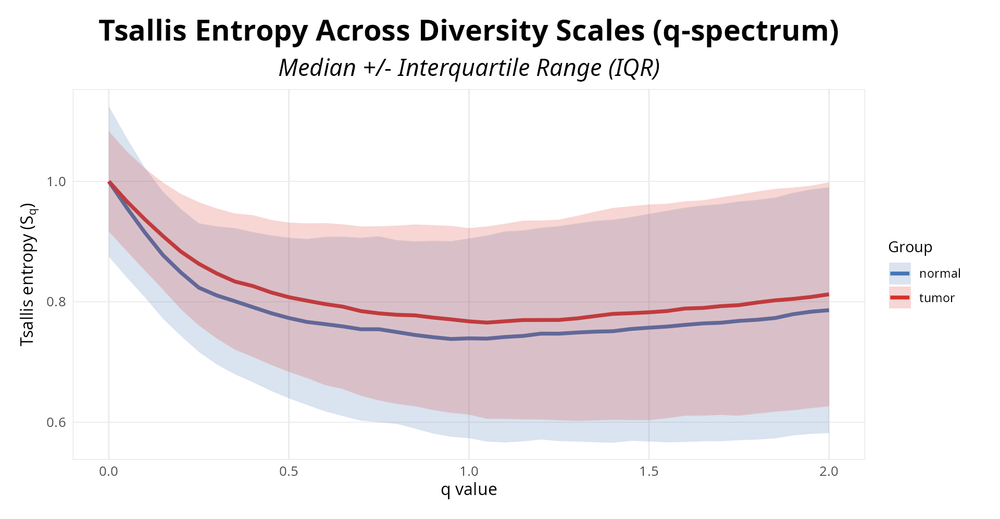
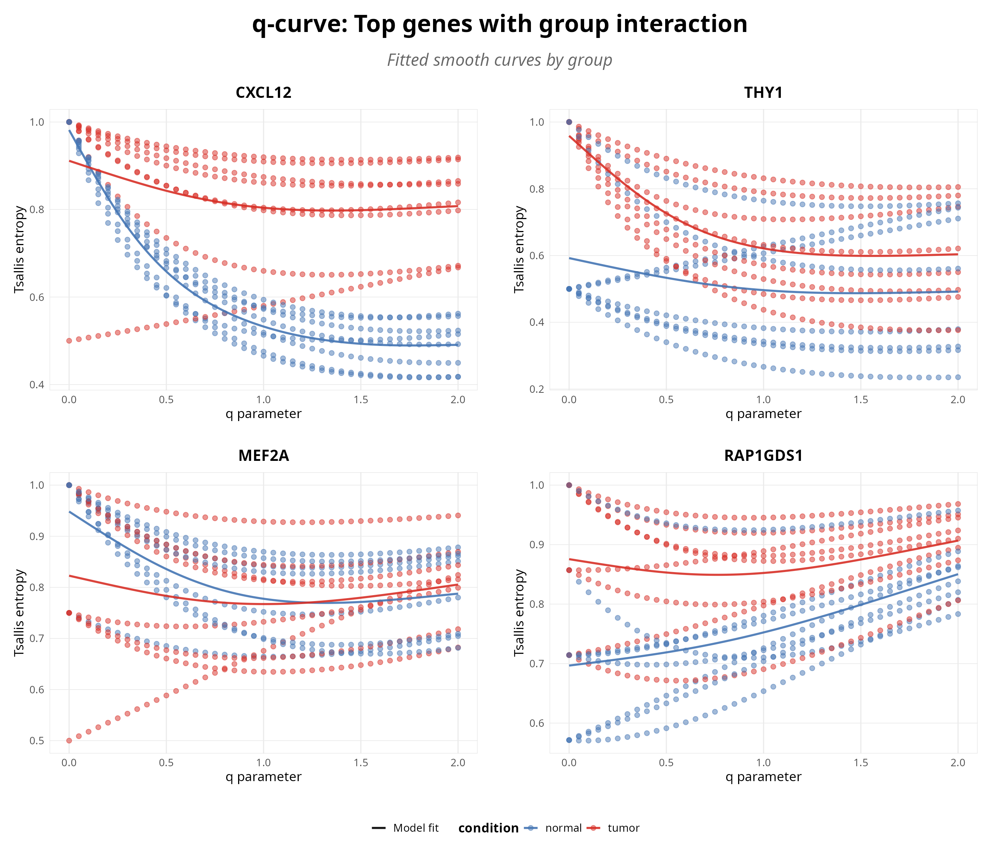
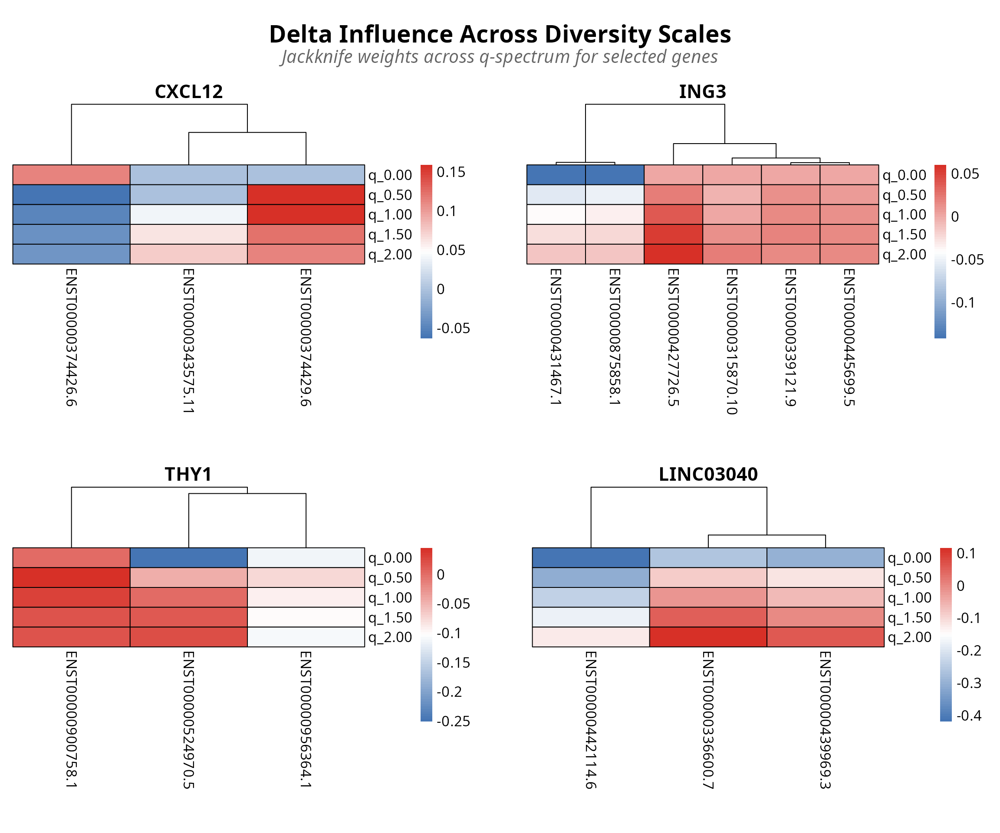
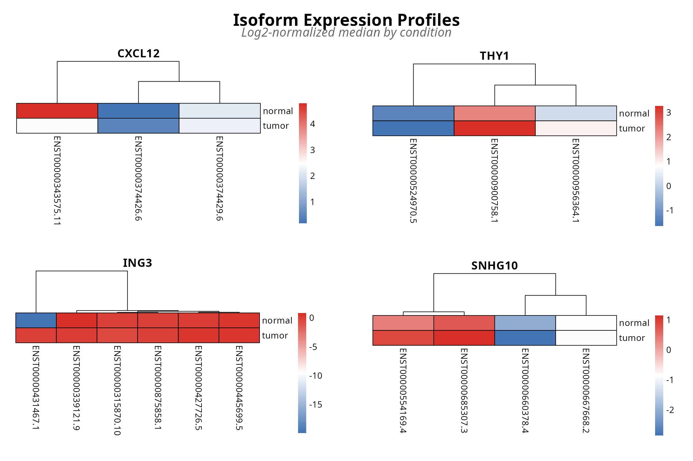
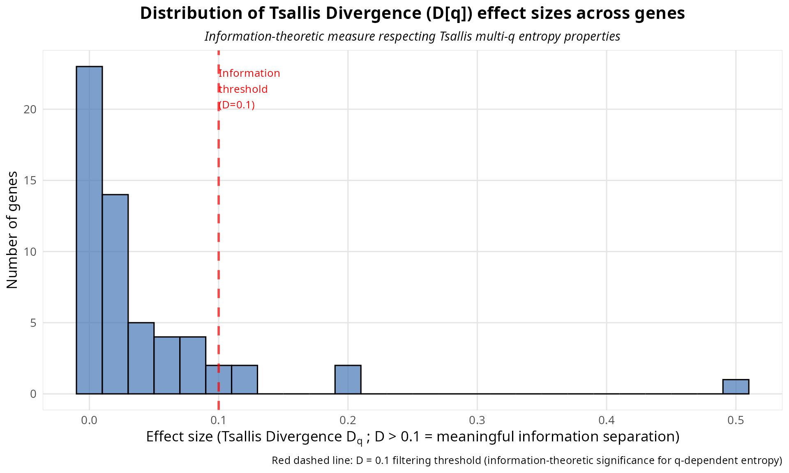
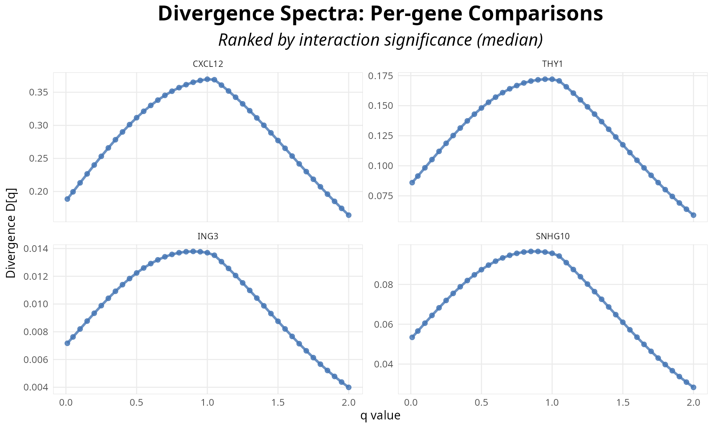
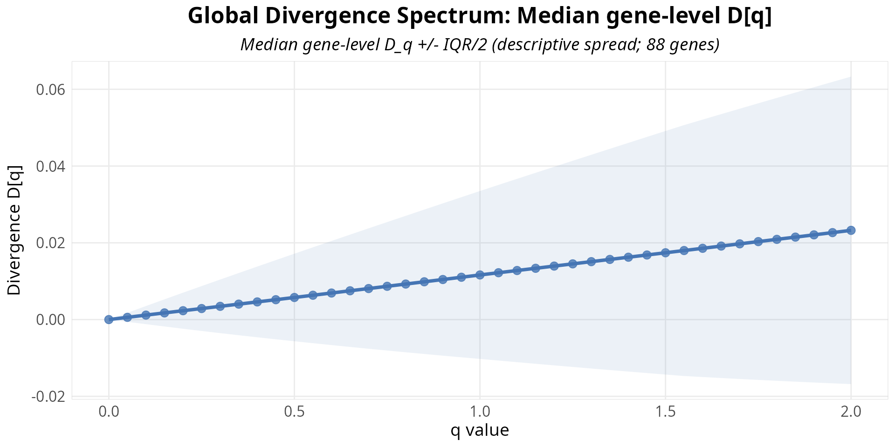

TSENAT: Tsallis Entropy Analysis Toolbox
Cristobal Gallardo Alba gallardoalba@pm.me
2026-07-26
Source:vignettes/TSENAT.Rmd
TSENAT.RmdIntroduction
TSENAT (Tsallis Entropy Analysis Toolbox) enables the modeling and quantification of isoform-usage complexity in RNA-seq data using Tsallis entropy, a scale-dependent diversity measure distinct from differential abundance tools (DESeq2, edgeR) and differential usage tools (DEXSeq, DRIMSeq). By tuning the entropy index parameter (), TSENAT examines transcriptome heterogeneity at different scales: rare variants (low ) or dominant isoforms (high ). The package computes Tsallis entropy and Tsallis divergence from transcript-level abundance estimates, compares measures between groups, and visualizes scale-dependent differences via q-curves.
Motivation
Common RNA-seq tools focus on either total gene abundance changes or individual transcript usage shifts, yet genes often remodel their isoform landscapes without changing overall expression-a phenomenon missed by these approaches. TSENAT quantifies isoform-usage diversity directly via Tsallis entropy, capturing biological signals invisible to abundance- or proportion-based summaries.
In this guide, we demonstrate the complete workflow: preprocessing transcript counts, computing entropy across entropic indices, testing for between-group differences, and visualizing scale-dependent complexity.
High-level workflow
- Load and preprocess transcript counts and filter low-abundance transcripts.
- Compute diversity (Tsallis entropy) and divergence (Tsallis divergence).
- Test for differences in entropy patterns between groups across entropic indices.
- Visualize results.
Design assumptions: This guide assumes paired or longitudinal designs with 6–8 samples per group for adequate power to detect entropy shifts while controlling false discovery rate. Smaller sample sizes may be underpowered to detect subtle isoform complexity changes.
Installation
The easiest way to install TSENAT is through Bioconda:
To install the latest development version from GitHub:
remotes::install_github("gallardoalba/TSENAT")Quick Start
For users who want to see results quickly, here is a minimal workflow:
library(TSENAT)
library(SummarizedExperiment)
# Load example data
data("readcounts", package = "TSENAT")
# Load readcounts object, which contains Salmon-quantified
# fragment counts with EM-based ambiguity resolution applied
readcounts <- as.matrix(readcounts)
# Load sample metadata and annotation
metadata_df <- read.table(
system.file("extdata", "metadata.tsv", package = "TSENAT"),
header = TRUE, sep = "\t"
)
gff3_file <- system.file("extdata", "annotation.gff3.gz", package = "TSENAT")
# Create analysis object with transcript counts, annotation, and metadata
config <- TSENAT_config(
sample_col = "sample",
condition_col = "condition",
paired = TRUE,
subject_col = "paired_samples",
control = "normal",
q = seq(0, 2, by = 0.05)
)
## Build TSENATAnalysis object
analysis <- build_analysis(
readcounts = readcounts,
tx2gene = gff3_file,
metadata = metadata_df,
config = config,
tpm = tpm,
effective_length = effective_length)
# Filter low-abundance transcripts
analysis <- filter_analysis(analysis)
# Compute Tsallis entropy using S4 wrapper (using single q value for quick start)
analysis <- calculate_diversity(analysis)
# Plot overall q-curve
p_qcurve <- plot_diversity_spectrum(
analysis,
dev_width = 12,
dev_height = 8)
print(p_qcurve)What is Entropy and Tsallis Entropy?
Historical Foundation and Intellectual Progression
The concept of entropy originated in Claude Shannon’s landmark 1948 paper on information theory (Shannon 1948), which established that information content could be quantified mathematically. Shannon entropy became the foundation for understanding complexity across mathematics, physics, and biology—if you draw a transcript from a distribution, how predictable is the outcome?
However, Shannon entropy treats all elements equally, regardless of their frequency: it weights rare and common elements identically. This limitation led mathematicians and physicists to explore generalized entropy families, most notably Rényi’s parametric family and Tsallis entropy. Both introduced tunable parameters that allow sensitivity to shift between rare and abundant elements. Remarkably, despite appearing different mathematically, Tsallis and Rényi entropies can be unified within a coherent framework through generalized logarithmic and exponential functions (Tsallis 2017)—both answer the fundamental question: What organizational scales matter?
More recently, Hill numbers (Chao et al. 2010) provided a modern ecological framework that reinterprets all generalized entropy measures as “true diversity” of different orders. This formulation clarified a crucial insight: diversity questions have scale-dependent answers. The Hill numbers framework unified richness (q=0), Shannon entropy (q=1), Simpson/Gini (q=2), and higher-order generalizations under a single mathematical umbrella—formalizing the idea that rare species and dominant species reveal different ecological (or in our case, transcriptomic) truths.
Why This Matters for RNA-seq: The Isoform Complexity Problem
Standard RNA-seq analysis measures whether transcript abundance changes between conditions. But a critical complementary question remains underexplored: how does the diversity of isoforms change? A gene may show little change in total abundance while dramatically reshuffling its isoform repertoire—a phenomenon that current methods largely miss.
Entropy quantifies precisely this: the complexity, richness, and balance of isoform heterogeneity. By measuring entropy across different biological scales (using the parameter q discussed below), researchers can detect whether changes are driven by shifts in rare isoforms or reorganization of dominant variants. The beauty of the Tsallis framework is that you obtain a complete picture of isoform heterogeneity by computing across a range of entropic indices—a “q-curve”—revealing which aspects of isoform organization change between conditions.
Mathematical Foundation and Interpretation
Tsallis Entropy: Definition and Intuition
For a discrete probability vector p=(p₁,…,pₙ) representing isoform proportions within a gene, Tsallis entropy is defined as:
This parametric family unites diverse entropy concepts under a single framework:
- Generalization: Extends beyond Shannon entropy to capture scale-dependent phenomena
- Mathematical elegance: Reduces to well-known diversity indices at specific entropic indices
- Practical flexibility: Enables data-driven exploration across the full diversity spectrum
The q Parameter: A Sensitivity Dial for Distribution Scales
From an information theory perspective (Shannon 1948; Furuichi 2006), entropy measures the uncertainty when drawing a single transcript from an isoform distribution. Higher entropy means the draw is less predictable (many similarly abundant isoforms), while lower entropy means one or a few isoforms dominate.
The q parameter acts as a sensitivity dial that controls which aspects of the distribution become visible:
- q < 1 (e.g., 0.5): Emphasizes rare, low-abundance isoforms; useful for discovering cryptic or condition-specific variants.
- q = 1: Recovers Shannon entropy; provides balanced sensitivity across all abundance scales.
- q > 1: Emphasizes dominant, abundant isoforms; captures core expression architecture.
This principle formalizes what cannot be implemented in classical Shannon analysis: the ability “not to set rare and common events on the same footing, as in standard statistics, but to enhance or depress them according to the parameter chosen” (Anastasiadis 2012; Ramírez-Reyes et al. 2016; Alomani and Kayid 2023).
Biological Interpretation: Richness and Evenness
The concept of “true diversity” (Chao et al. 2010) emphasizes that diversity decomposes into two independent components: species richness (how many distinct isoforms exist) and evenness (how evenly distributed they are across the population). Two genes can have identical Shannon entropy yet differ dramatically in isoform structure: one might be dominated by a single abundant isoform with many rare variants (revealing complexity at low q sensitivity), while another distributes transcripts equally across many isoforms (maintaining heterogeneity across all q values). This distinction is crucial: no single entropic index captures the complete complexity landscape.
Why Multi-Scale Entropy Matters: Biological Contexts
The multi-scale nature of Tsallis entropy makes it suited for exploring isoform complexity across diverse biological contexts. Different biological processes prioritize different organizational scales:
Isoform complexity as a biological signal: Isoform switching—reorganization of the isoform landscape without necessarily changing total gene abundance—reflects strategic shifts in protein function driven by splicing regulation. Evidence from single-cell transcriptomics demonstrates that transcript-level complexity varies systematically across cell types and developmental states (Cao et al. 2017), validating that isoform heterogeneity is a genuine biological phenomenon rather than noise. By measuring information content at different entropic indices, researchers can detect patterns invisible to traditional transcript abundance measures alone:
- Changes in rare isoform usage (revealed through low q sensitivity) might reflect exploratory or error-correction mechanisms
- Shifts in dominant isoform selection (revealed through high q sensitivity) might reflect functional specialization or robustness demands
- The full q-curve reveals whether cellular transitions involve wholesale reorganization or targeted adjustments
TSENAT enables detection of these changes through entropy-based approaches, which capture whether complexity is increasing (diversity spreading across isoforms) or decreasing (consolidation onto dominant isoforms). The recent emphasis on information-theoretic approaches in computational biology (Chanda et al. 2020; Bajić 2024) reflects broader recognition that complex biological systems encode information across multiple organizational scales.
Beyond Classical Abundance Measures
Traditional RNA-seq analysis focuses on fold-changes and differential abundance of specific transcripts. Tools like edgeR (Robinson et al. 2010; Baldoni et al. 2024), DESeq2 (Love et al. 2014), and DEXSeq (Anders et al. 2012) measure whether individual transcripts increase/decrease in expression or shift in relative proportion.Entropy-based approaches complement these methods by detecting complexity shifts —whether genes consolidate onto fewer dominant isoforms or maintain balanced distributions. TSENAT detects this reorganization answering a fundamentally different biological question: not “which transcripts change?” but “how is the isoform complexity changing?”
Mechanistic Evidence: Disease and Evolution
Peer-reviewed literature provides strong empirical support for entropy-based analysis in biological contexts:
Entropy and cancer heterogeneity: Cancer cells accumulate genetic and epigenetic perturbations that systematically increase disorder in gene regulatory networks. Tarabichi and colleagues demonstrate that “Increased entropy of signaling (or gene interaction networks) has been well studied as a cancer characteristic: Network entropy increases along with cancer progresses” (Tarabichi et al. 2013).
Nijman’s complementary analysis reveals the mechanism: “cancer-associated perturbations collectively disrupt normal gene regulatory networks by increasing their entropy. Importantly, in this model both somatic driver and passenger alterations contribute to ‘perturbation-driven entropy’, thereby increasing phenotypic heterogeneity and evolvability” (Nijman 2020). This framework elegantly explains observed cancer heterogeneity without requiring that every genetic change confers an advantage—some mutations contribute entropy directly through network disruption. Increased entropy in gene regulatory networks thus drives phenotypic heterogeneity and cellular plasticity, suggesting that transcript-level entropy captures similar organizational principles (Nijman 2020).
TSENAT Main Workflow
We now demonstrate a complete workflow for detecting isoform switching — when cells reorganize their isoform landscape without necessarily changing total gene abundance. This often reflects strategic shifts in protein function driven by splicing regulation.
In this workflow, you will:
- Load transcript counts and sample metadata
- Identify genes with significant scale-dependent isoform complexity changes (using Scale-Adaptive Interaction Tests)
- Assess which individual transcripts drive those changes (using jackknife resampling)
- Interpret results in the context of paired experimental designs
We’ll work with a paired experimental design where treated and control samples are linked, enabling detection of robust biological signals while controlling for subject-level variability. By the end, you’ll know not just which genes undergo isoform switching, but which transcripts are responsible and at which diversity scales the switching occurs.
Load data and metadata
An example dataset is included for demonstration.
# Load packages
suppressPackageStartupMessages({
library(TSENAT)
library(ggplot2)
library(SummarizedExperiment)
})
# Setup random seed for reproducibility
set.seed(42)Now we will load the example dataset and associated metadata:
# Load example dataset (lazy-loaded as 'readcounts' by default)
# This includes SALMON preprocessing outputs:
# - readcounts: Salmon NumReads (raw fragment counts with EM-based ambiguity resolution)
# - tpm: Salmon TPM matrix (length and library-normalized expression)
# - effective_length: Salmon EffectiveLength vector (accounts for fragment length distribution)
data(readcounts)
readcounts <- as.matrix(readcounts)
metadata_df <- read.table(
system.file("extdata", "metadata.tsv", package = "TSENAT"),
header = TRUE, sep = "\t"
)
gff3_file <- system.file("extdata", "annotation.gff3.gz", package = "TSENAT")Data preprocessing and filtering
Next, we will create a TSENATAnalysis object containing
a SummarizedExperiment data container (a standard
Bioconductor class for storing high-throughput assay data along with
associated metadata). You can read more about it in the Bioconductor
documentation.
We will use the GFF3.gz annotation file for extracting the transcript-to-gene mapping and building the analysis object. We’ll also include sample metadata for improved analysis. Following Bioconductor best practices, we create the configuration FIRST, then pass it to the builder function (fail-fast principle):
## Configure analysis parameters first (best practice: fail-fast principle)
## This validates all parameters before object creation
config <- TSENAT_config(
sample_col = "sample",
condition_col = "condition",
subject_col = "paired_samples",
q = seq(0, 2, by = 0.05),
nthreads = 2,
paired = TRUE,
control = "normal"
)
## Build a complete `TSENATAnalysis` object
analysis <- build_analysis(
config = config,
readcounts = readcounts,
metadata = metadata_df,
tx2gene = gff3_file,
tpm = tpm,
effective_length = effective_length
)The TSENATAnalysis object contains a
SummarizedExperiment with transcript-level counts and gene
annotations extracted from the GFF3 file.
To reduce noise and improve statistical power, we should filter out lowly-expressed transcripts. Expression estimates of transcript isoforms with zero or low expression might be highly variable (Jose and Lal 2013; Chakraborty 2019). For more details on the effect of transcript isoform prefiltering on differential transcript usage, see this paper.
# Filter lowly-expressed transcripts
analysis <- filter_analysis(analysis, stringency = "medium")The stringency = "medium" parameter keeps transcripts
present in $$50% of samples with TPM values above the median of mean
gene TPM. This balances noise reduction with preservation of isoform
diversity needed for meaningful entropy calculations.
Compute Tsallis Entropy
We now compute Tsallis entropy across your configured q-spectrum.
Diversity measures provide a comprehensive framework for assessing
isoform heterogeneity at multiple scales (Ramírez-Reyes et al. 2016; Gandrillon et al.
2021). We normalize entropy to [0,1] range
(norm = TRUE) for comparable cross-q assessment.
# Set random seed for reproducible bootstrap CI calculations
set.seed(12345)
# Compute diversity
analysis <- calculate_diversity(
analysis,
norm = TRUE
)
# Extract and display diversity results
diversity <- results(analysis,
type = "diversity",
n_genes = 4,
sample = "SRR14800481")
print(diversity)| Gene | q=0.0 | q=0.5 | q=1.0 | q=1.5 | q=2.0 |
|---|---|---|---|---|---|
| FOXJ2 | 0.66667 | 0.53796 | 0.48150 | 0.46975 | 0.48518 |
| TMEM38A | 1.00000 | 0.82704 | 0.72526 | 0.66965 | 0.64401 |
| CCNE1 | 0.33333 | 0.32256 | 0.32749 | 0.34571 | 0.37418 |
| MCOLN1 | 1.00000 | 0.39297 | 0.21567 | 0.16305 | 0.15195 |
With the q-spectrum we can produce q-curves at two levels:
Overall diversity profile (Figure 1): Shows how entropy changes across q-values for all samples aggregated, colored by condition (control vs. treatment).
Gene-specific q-curves (Figure 2): For genes with significant q×condition interactions, shows how each gene’s diversity pattern differs by condition across the entropic spectrum.
# Plot overall q-curve
p_qcurve <- plot_diversity_spectrum(analysis)
print(p_qcurve)
Figure 1: Isoform diversity profiles across entropic indices. Lines show normalized Tsallis entropy (0-1) for each sample, blue control and red treatment.
Diverging curves between groups indicate scale-dependent diversity
differences: separation at low q implies differences in
rare isoforms, while separation at high q signals
differences in dominant isoforms.
Quality Control: Sample Influence Assessment
Before proceeding with group-level comparisons, we should assess whether individual samples exert disproportionate influence on our entropy estimates (Efron, Bradley and Tibshirani, Robert J. 1993). To address this, we employ a leave-one-out influence assessment combined with robust M-estimation (Ernst 2004) (iteratively re-weighted least squares with Huber loss). This approach quantifies how much each sample’s removal affects the estimated location differences across the q-spectrum, providing a sample-level quality control metric independent of group assignment.
Samples with high influence scores exert disproportionate leverage on entropy estimates and may warrant deeper investigation for technical quality issues, subject-specific outliers, or genuine biological signals that require careful interpretation.
We configure three key parameters: loss_type = "huber"
employs Huber M-estimation (robust to outliers with bounded influence),
q_combine_method = "mean" averages influence metrics across
the entire q-spectrum for a single score per sample, and
influence_threshold = 0.75 designates the percentile cutoff
above which samples are flagged (such that the top 25% most influential
samples are reviewed).
# Perform multi-q sample influence analysis via S4 wrapper
analysis <- calculate_m_estimator(
analysis,
loss_type = "huber",
q_combine_method = "mean",
influence_threshold = 0.75
)
# Extract results from metadata using accessor function
sample_qc <- metadata(analysis, "m_estimate_results")
print(sample_qc)| Sample | Condition | Proportion_Affected | Distance_from_Centroid | Status |
|---|---|---|---|---|
| SRR14800481 | normal | 0.847 | 1.7930 | OK |
| SRR14800480 | normal | 0.806 | 1.2384 | OK |
| SRR14800477 | normal | 0.833 | 1.5809 | OK |
| SRR14800476 | normal | 0.889 | 0.9118 | OK |
| SRR14800475 | normal | 0.861 | 1.6796 | OK |
| SRR14800490 | normal | 0.849 | 1.3522 | OK |
| SRR14800489 | normal | 0.875 | 1.0969 | OK |
| SRR14800488 | normal | 0.861 | 1.6536 | OK |
| SRR14800479 | tumor | 0.861 | 2.2114 | OK |
| SRR14800478 | tumor | 0.903 | 1.5721 | Flag for QC |
| SRR14800487 | tumor | 0.861 | 1.2201 | OK |
| SRR14800486 | tumor | 0.903 | 1.4798 | Flag for QC |
| SRR14800485 | tumor | 0.861 | 1.4140 | OK |
| SRR14800484 | tumor | 0.889 | 1.1499 | OK |
| SRR14800483 | tumor | 0.861 | 1.6020 | OK |
| SRR14800482 | tumor | 0.917 | 1.6711 | Flag for QC |
Interpretation: Samples with distance from centroid >1.5 or proportion of affected genes >0.85 are flagged for quality control review. Flagged samples may reflect genuine biological heterogeneity or technical artifacts requiring careful examination before proceeding with downstream analysis.
Scale-Adaptive Interaction Tests
Each gene produces a q-curve: a trajectory showing
how entropy changes across entropic scales from rare (low
q) to abundant (high q) isoforms. Our goal is
to detect whether this curve differs between groups—in other words,
whether the effect of q on entropy depends
on which group a sample belongs to. This is captured
statistically as a q x condition interaction: if
significant, it reveals genes with condition-specific diversity patterns
that change shape across the diversity spectrum. Scale-Adaptive
Interaction Tests (SAIT) naturally formalize this multi-scale comparison
through adaptive statistical frameworks, making them ideal for
identifying such scale-dependent biological signals.
We can test for these interactions using one of four methods, each with specific strengths:
- GAM (generalized additive model): flexibly captures nonlinear q-response patterns via adaptive smoothing splines. Default method.
- LMM (linear mixed models): models subject-level random intercepts to account for within-subject correlation in repeated q-ordered measurements.
- GEE (generalized estimating equations): particularly useful for paired and longitudinal designs with repeated q-measures.
- FPCA (functional principal component analysis): treats q-values as ordered functional data, implicitly capturing q-ordering structure.
All methods automatically account for the AR(1) correlation structure inherent in Tsallis entropy measurements.
# Scale-adaptive interaction test across q values using S4 wrapper
analysis <- calculate_sait(
analysis,
method = "gam",
multicorr = "hochberg"
)
# Extract SAIT interaction results
sait_results <- results(analysis, type = "sait", rankBy = "pvalue", n = 10)
print(sait_results)| Gene | P-value | Adj. P-value | Effect Size | Test Statistic | Model Converged | Heteroscedasticity |
|---|---|---|---|---|---|---|
| CXCL12 | 4.63e-88 | 3.52e-86 | 0.8158 | 5.9954 | TRUE | TRUE |
| THY1 | 3.80e-32 | 2.85e-30 | 0.6052 | 3.4843 | TRUE | TRUE |
| MEF2A | 1.32e-23 | 9.79e-22 | 0.2003 | 0.9256 | TRUE | TRUE |
| RAP1GDS1 | 6.85e-20 | 5.00e-18 | 0.5516 | 0.8500 | TRUE | TRUE |
| GSKIP | 1.40e-18 | 1.01e-16 | 0.3107 | 1.0130 | TRUE | TRUE |
| ING3 | 6.95e-12 | 4.93e-10 | 0.3589 | 0.6840 | TRUE | TRUE |
Interpretation: TRUE in the Heteroscedasticity column indicates that variance heterogeneity was detected across the q-spectrum (assumption violated, results warrant caution); FALSE indicates homoscedasticity (variance homogeneity assumption satisfied).
Now we will plot the q-curve profile for the top genes identified by the scale-adaptive interaction test.
# Plot q-curve profiles for the top 4 genes using the S4 wrapper
combined_plot <- plot_sait(
analysis,
n_top = 4
)
print(combined_plot)
Figure 2: Scale-dependent interaction analysis. GAM-identified genes showing significant q$ imes$condition effects (Hochberg-adjusted p < 0.05).
Transcript Switching Across Diversity Scales
The SAIT interaction tests whether condition effects depend on which diversity scale (q-value) you examine. This section identifies which individual transcripts drive these scale-dependent patterns, revealing whether the same transcripts switch across all scales or whether different regulatory mechanisms dominate at rare versus abundant isoform scales.
Two-Stage Analysis Approach
This workflow combines two complementary statistical methods:
- Multi-q SAIT interaction test: Tests whether the condition effect on diversity depends on q (overall pattern across diversity scales)
- Single-q jackknife resampling: Tests which individual transcripts drive those patterns at each q-value, with robustness assessment
Delta influence (from jackknife resampling (Efron, Bradley and Tibshirani, Robert J. 1993)) quantifies how each transcript’s relative importance changes between normal and tumor conditions, weighted by stability across bootstrap iterations (positive = more influential in normal condition; negative = more influential in tumor condition).
Key Interpretation Questions
- Consistent switching: Do the same transcripts show significant delta influence across all q-values? Suggests robust, scale-independent splicing shift.
- Mixed/scale-dependent switching: Do different transcripts matter at different q-values? Suggests regulatory complexity where mechanisms differ by scale.
- Classification: Does isoform reorganization involve the same transcripts across scales, or a layered process where different regulatory inputs dominate at rare vs. abundant scales?
# Multi-Q analysis: Test switching at different q values
analysis <- calculate_jis(
analysis,
q = c(0, 0.5, 1, 1.5, 2),
nboot = 100,
lm_p_threshold = 0.05,
threshold = 90
)We configure three key parameters for the switching analysis:
nboot = 100 specifies 100 bootstrap resamples to estimate
robust confidence intervals for delta influence values (Efron, Bradley and Tibshirani, Robert J. 1993);
lm_p_threshold = 0.05 filters genes to those with
significant
qcondition
interaction effects (p < 0.05) before assessing transcript switching;
and threshold = 90 designates transcripts with support
90% across bootstrap samples as robust switches. These parameters
balance sensitivity (detecting switching) with specificity (avoiding
false positives from noise).
The tables below show the transcript switching patterns for the top
genes with strongest q×condition interactions, automatically computed
via bootstrap resampling. The Direction Consistency column
classifies each transcript: “Consistent” indicates stable switching
across entropic indices, while “Mixed” indicates scale-dependent
switching. This reveals whether isoform shifts involve the same
transcripts across scales or whether different entropic indices
emphasize different transcripts.
# Retrieve gene switching tables
tables_result <- results(analysis, type = "switching_tables")Gene: CXCL12 (ENSG00000107562.18)
| Transcript | q=0.50 | q=1.00 | q=1.50 | Direction Consistency |
|---|---|---|---|---|
| ENST00000343575.11 | 0.000 | 0.041 | 0.062 | Mixed directions |
| ENST00000374426.6 | -0.063 | -0.051 | -0.040 | Consistent negative |
| ENST00000374429.6 | 0.164 | 0.156 | 0.123 | Consistent positive |
Gene: THY1 (ENSG00000154096.15)
| Transcript | q=0.50 | q=1.00 | q=1.50 | Direction Consistency |
|---|---|---|---|---|
| ENST00000524970.5 | -0.046 | 0.002 | 0.014 | Mixed directions |
| ENST00000900758.1 | 0.045 | 0.031 | 0.019 | Consistent positive |
| ENST00000956364.1 | -0.075 | -0.092 | -0.102 | Consistent negative |
Delta Influence Across Diversity Scales
Visualize switching patterns for the top genes identified by the SAIT interaction test. This shows which transcripts are switching in genes with significant q × condition interaction effects. The heatmaps below display jackknife delta influence (Efron and Tibshirani 1993)-a resampling-based measure of how robustly each transcript’s relative contribution changes between conditions-across different entropic indices and transcripts for each gene. Delta influence values are computed from bootstrap resampling iterations, providing robust, non-parametric estimates of transcript switching significance weighted by consistency across replicates.
# Generate multi-Q heatmaps for top 4 genes using S4 wrapper
plot_jis_delta(analysis, n_genes = 4)
Figure 3: Transcript-level switching patterns via jackknife resampling. Rows q-values (0-2.0), columns transcripts. Red/blue indicates condition influence.
Interpretation: Rows represent q-values across the diversity spectrum (0 to 2.0, with low q emphasizing rare isoforms and high q emphasizing abundant isoforms).
- Red cells indicate transcripts with strong positive delta influence in the normal condition (first condition)—meaning these transcripts became more important in normal samples compared to tumor samples.
- Blue cells indicate negative delta influence in the normal condition (or equivalently, positive influence in the tumor condition)—meaning these transcripts became less important in normal samples but more important in tumor samples.
- Color intensity reflects robustness across bootstrap resamples: bright red/blue = consistent signal, pale/white = noisy or uncertain signal.
This robustness-weighted visualization reveals not just which transcripts switch, but how reliably they switch, allowing distinction between robust biological signals and artifacts of sampling variation.
Finally we can visualize the isoform expression profiles.
# Generate transcript abundance heatmap
plot_expression(analysis, top_n = 4, metric = "median")
Figure 4: Transcript abundance heatmap with hierarchical clustering. Rows are transcripts, columns are conditions. Blue low, red high expression.
This heatmap reveals a critical blind spot in standard transcript quantification approaches: raw abundance measures reduce each transcript to a single number, completely obscuring the relational structure that defines isoform switching. TSENAT’s entropy-based approach captures precisely what this heatmap reveals: not just which transcripts change in abundance, but how the diversity and balance of the isoform repertoire itself changes.
Effect Size Analysis
To understand which diversity scales show the most pronounced biological differences between groups, we will compute Tsallis divergence across the q-spectrum (Kullback and Leibler 1951; Furuichi 2006; Jost 2006; Erven and Harremoes 2014; Sason 2022; Shiner et al. 2002). This metric reveals whether group differences are driven by rare isoforms (low ), dominant isoforms (high ), or uniformly across scales. Values indicate meaningful information-theoretic separation between conditions, revealing that isoform complexity patterns fundamentally differ between treatment groups across all q-dependent scales (Ré and Azad 2014).
For two probability distributions and representing isoform proportions in control and treatment conditions, Tsallis divergence is:
where and are the probability values at position .
# Computes pairwise information-theoretic distance (Tsallis divergence)
analysis <- calculate_divergence(analysis)| q_0.01 | q_0.05 | q_0.1 | |
|---|---|---|---|
| FOXJ2 | 0.04377 | 0.04633 | 0.04952 |
| TMEM38A | 0.14876 | 0.15768 | 0.16891 |
| GSR | 0.08359 | 0.08801 | 0.09349 |
| SNX4 | 0.06378 | 0.06744 | 0.07200 |
# Compute effect sizes
analysis <- calculate_effect_sizes(
analysis,
significance_threshold = 0.05,
enrich_per_q_pattern = TRUE
)
# Extract top 6 genes by statistical significance
top_genes_result <- results(
analysis,
type = "effect_sizes_divergence",
top_n = 6,
sort_by = "p_value_interaction"
)
print(top_genes_result)| Gene | P-value | Slope Diff | D(q=0.5) | D(q=1.0) | D(q=2.0) | Pattern |
|---|---|---|---|---|---|---|
| CXCL12 | 3.52e-86 | -3.322e-01 | 3.115e-01 | 3.697e-01 | 1.643e-01 | Balanced |
| THY1 | 2.85e-30 | 2.474e-01 | 1.481e-01 | 1.720e-01 | 5.890e-02 | Balanced |
| MEF2A | 9.79e-22 | -1.268e-01 | 3.870e-02 | 3.940e-02 | 1.000e-02 | Rare driven |
| RAP1GDS1 | 5.00e-18 | 1.240e-01 | 1.700e-02 | 1.870e-02 | 5.300e-03 | Rare driven |
| GSKIP | 1.01e-16 | 1.353e-01 | 2.125e-01 | 2.352e-01 | 8.390e-02 | Rare driven |
| ING3 | 4.93e-10 | 1.112e-01 | 1.220e-02 | 1.370e-02 | 4.000e-03 | Rare driven |
Interpretation of Pattern Types:
- Rare driven: D(q=0.5) >> D(q=2.0). Low-abundance isoforms are condition-specific; treatment group preferentially expresses rare transcripts not seen in control.
- Abundant driver: D(q=0.5) << D(q=2.0). High-abundance isoforms shift between conditions; treatment remodels the dominant transcript landscape without rare variants changing.
- Balanced: D(q=0.5) ~= D(q=2.0). All isoforms shift proportionally; no preferential weighting to rare or abundant forms; suggests systematic rebalancing.
The effect sizes reveal which genes show the most information-theoretic separation across the q-spectrum between paired treatment groups. Genes with Tsallis divergence D > 0.1 show substantial divergence, indicating that entropy distributions differ fundamentally between conditions across the full q-spectrum.
Biological Interpretation: Following Tsallis entropy theory and information-theoretic principles (Furuichi 2006; Jost 2006; Erven and Harremoes 2014; Hyndman and Athanasopoulos 2018), effect size quantification (Chanda et al. 2020) genes with large D values are those where isoform complexity distributions differ qualitatively between conditions when examined at all sensitivity scales (q = rare -> abundant isoforms). For example, a gene might show high entropy at low q (emphasizing rare isoforms) in one condition but low entropy at high q (emphasizing abundant isoforms) in another, revealing scale-dependent regulatory mechanisms. These genes are candidates for investigation of condition-specific splicing architecture and dynamic isoform switching.
# Visualize the distribution of Tsallis divergence effect sizes across genes
plot_obj <- plot_divergence_distribution(
analysis,
threshold = 0.1
)
print(plot_obj)
Figure 5: Distribution of Tsallis divergence effect sizes across genes. X-axis shows divergence values; y-axis shows gene density. Threshold line indicates substantial divergence (D > 0.1) distinguishing signal genes from background.
# Visualize q-spectrum curves for top 4 genes by significance
p_multi <- plot_divergence_spectrum(
analysis,
n_genes = 4,
use_pvalue_ranking = TRUE
)
print(p_multi)
Figure 6: Q-spectrum curves for top genes by significance. Each line represents divergence as a function of q-value; shape reveals biological pattern (rare-driven, balanced, or abundant-driven).
Interpreting the Q-Spectrum Curve:
Shape matters more than single value: The q-spectrum curve is the complete biological story (Chao et al. 2010). A flat curve (balanced) vs. declining curve (rare driven) vs. rising curve (abundant driven) encode fundamentally different mechanisms (Sason 2022). As described in the pattern table above, genes falling into each category reveal different regulatory strategies.
q=1 (KL divergence): The middle point corresponds to ordinary Kullback-Leibler divergence (Kullback and Leibler 1951; Ré and Azad 2014), where the Tsallis divergence reduces to standard KL divergence in the limit q→1. This weights all isoforms equally.
We can also plot the global divergence spectrum across all genes. This curve is the full biological signature of isoform switching-the pattern encodes which abundance scales (rare vs. abundant) are affected.
# Visualize global divergence q-spectrum across all genes (aggregated)
# Plot is rendered directly by knitr (no file dependency)
p <- plot_divergence_spectrum(analysis)
print(p)
Figure 7: Global divergence spectrum across all genes. Aggregated q-spectrum pattern shows which abundance scales (rare vs. abundant isoforms) are affected genome-wide.
Statistical Validation During Interpretation:
Bootstrap CI validity: Per-q CIs should narrow as q increases (higher q = aggregation effect, less variance). If CIs grow with q, check for data quality issues (Efron and Tibshirani 1993; Efron, Bradley and Tibshirani, Robert J. 1993).
Monotonicity check: By Tsallis entropy theory , entropy is monotone decreasing in q. Divergence should NOT show erratic increases with q. Small fluctuations are normal, but large spikes indicate numerical instability (Furuichi 2006).
Comparison with genome-wide patterns: Compute q-spectra for housekeeping genes (GAPDH, ACTB, etc.). These should show BALANCED patterns. If not, revisit normalization parameters (Erhard et al. 2018).
Appendices
This main vignette is complemented by two comprehensive appendices:
Appendix A: Equivalence Validation - TSENAT vs SplicingFactory
Objetive: Validates that TSENAT’s Shannon and Simpson entropy implementations are mathematically equivalent to SplicingFactory.
Appendix B: Non-Parametric Validation of Statistical Test Results via GAM and Rank-Based Methods
Objective: Validate q-value * group interaction detection results from statistical tests using complementary non-parametric modeling approaches.
References
Adami, C. (2004). “Information theory in molecular biology.” Physics of Life Reviews, 1(1), 3–22. https://doi.org/10.1016/j.plrev.2004.01.002
Alomani, G., & Kayid, M. (2023). “Further Properties of Tsallis Entropy and Its Application.” Entropy, 25(2), 199. https://doi.org/10.3390/e25020199
Anastasiadis, A. (2012). “Entropy Properties and Multiple Tsallis Distributions.” Entropy, 14, 174–176. https://doi.org/10.3390/e14020174
Bajic, D. (2024). “Information Theory, Living Systems, and Communication Engineering.” Entropy, 26(5), 430. https://doi.org/10.3390/e26050430
Bartal, A., & Jagodnik, K. M. (2022). “Progress in and Opportunities for Applying Information Theory to Computational Biology and Bioinformatics.” Entropy, 24(7), 925. https://doi.org/10.3390/e24070925
Benjamini, Y., & Hochberg, Y. (1995). “Controlling the false discovery rate: a practical and powerful approach to multiple testing.” Journal of the Royal Statistical Society B, 57(1), 289–300
Cao, J., Packer, J. S., Ramani, V., Cusanovich, D. A., Huynh, C., Daza, R., … & Shendure, J. (2017). “Comprehensive single-cell transcriptional profiling of a multicellular organism.” Science, 357, 661–667. https://doi.org/10.1126/science.aam8940
Chakraborty, T. (2019). Introductory Time Series Analysis. Indian Statistical Institute, Kolkata
Chanda, P., Costa, E., Hu, J., Sukumar, S., Van Hemert, J., & Walia, R. (2020). “Information Theory in Computational Biology: Where We Stand Today.” Entropy, 22(6), 627. https://doi.org/10.3390/e22060627
Chao, A., Chiu, C.-H., & Jost, L. (2010). “Phylogenetic Diversity Measures Based on Hill Numbers.” Philosophical Transactions of the Royal Society B, 365(1558), 3599–3609. https://doi.org/10.1098/rstb.2010.0272
Cover, T. M., & Thomas, J. A. (2006). Elements of Information Theory (2nd ed.). Wiley-Interscience.
Efron, B., & Tibshirani, R. J. (1993). An Introduction to the Bootstrap (2nd ed.). Chapman and Hall
Erhard, F., Hense, B., Jafari, M., Siebourg-Polster, J., Dölken, L., & Zimmer, R. (2018). “Improved Ribo-seq puromycin target reliability using Bayesian nonparametrics.” Bioinformatics, 34(12), 2096–2102
Ernst, M. D. (2004). “Permutation Methods: A Basis for Exact Inference.” Statistical Science, 19(4), 676–685
Furuichi, S. (2006). “Information theoretical properties of Tsallis entropies.” Journal of Mathematical Physics, 47, 023302. https://doi.org/10.1063/1.2165744
Gandrillon, O., Gaillard, M., Espinasse, T., Garnier, N. B., Dussiau, C., Kosmider, O., & Sujobert, P. (2021). “Entropy as a Measure of Variability and Stemness in Single-Cell Transcriptomics.” Entropy, 24(1), e93532. https://doi.org/10.3390/e24010018
Gao, X., Tsai, S.-B., Liu, F., Pan, L., & Deng, Y. (2019). “Uncertainty Measure Based on Tsallis Entropy in Evidence Theory.” International Journal of Intelligent Systems, 34(6), 1626–1647. https://doi.org/10.1002/int.22185
Golomb, R., Yoles, M., Fishilevich, S., Cohen, O., Savariego Peled, E., Dahary, D., … & Pilpel, Y. (2026). “An Information Content Principle Explains Regulatory Patterns.” bioRxiv, ahead of print. https://doi.org/10.1101/2026.02.19.706555
Hyndman, R. J., & Athanasopoulos, G. (2018). Forecasting: Principles and Practice (2nd ed.). OTexts. https://otexts.com/fpp2/
Jost, L. (2006). “Entropy and Diversity.” Oikos, 113(2), 363–375. https://doi.org/10.1111/j.2006.0030-1299.14714.x
Jose, J., & Lal, P. S. (2013). “Application of ARIMA(1,1,0) Model for Predicting Time Delay of Search Engine Crawlers.” Informatica Economică, 17(4), 26–39. https://doi.org/10.12948/issn14531305/17.4.2013.03
Kullback, S., & Leibler, R. A. (1951). “On information and sufficiency.” Annals of Mathematical Statistics, 22(1), 79–86. https://doi.org/10.1214/aoms/1177729694
Nijman, S. M. B. (2020). “Perturbation-driven entropy as a source of cancer cell heterogeneity.” Trends in Cancer, 6(6), 454–462. https://doi.org/10.1016/j.trecan.2020.02.016
Phipson, B., & Smyth, G. K. (2010). “Permutation P-values should never be zero.” Statistical Applications in Genetics and Molecular Biology, 9(1), Article 39
Ramírez-Reyes, A., Hernández-Montoya, A. R., Herrera-Corral, G., & Domínguez-Jiménez, I. (2016). “Determining the Entropic Index q of Tsallis Entropy in Images through Redundancy.” Entropy, 18(8), 299. https://doi.org/10.3390/e18080299
Ré, M. A., & Azad, R. K. (2014). “Generalization of Entropy Based Divergence Measures for Symbolic Sequence Analysis.” PLoS ONE, 9(4), e93532. https://doi.org/10.1371/journal.pone.0093532
Sason, I. (2022). “Divergence Measures: Mathematical Foundations and Applications in Information-Theoretic and Statistical Problems.” Entropy, 24(5), 712. https://doi.org/10.3390/e24050712
Seweryn, M. T., Pietrzak, M., & Ma, Q. (2020). “Application of Information Theoretical Approaches to Assess Diversity and Similarity in Single-Cell Transcriptomics.” Computational and Structural Biotechnology Journal, 18, 1830–1837. https://doi.org/10.1016/j.csbj.2020.05.006
Shannon, C. E. (1948). “A Mathematical Theory of Communication.” The Bell System Technical Journal, 27(3–4), 379–423
Shiner, J. S., Emelyanova, N. A., & Gafarov, F. M. (2002). Entropy and Entropy Generation: Fundamentals and Applications. Kluwer Academic Publishers
Simpson, E. H. (1949). “Measurement of diversity.” Nature, 163, 688. https://doi.org/10.1038/163688a0
Tarabichi, M., Antoniou, A., Saiselet, M., Pita, J. M., Andry, G., Dumont, J. E., … & Maenhaut, C. (2013). “Systems biology of cancer: entropy, disorder, and selection-driven evolution to independence, invasion and ‘swarm intelligence’.” Cancer Metastasis Reviews, 32, 403–421. https://doi.org/10.1007/s10555-013-9431-y
Tsallis, C. (2017). “On the foundations of statistical mechanics.” European Physical Journal Special Topics, 226, 1433–1443. https://doi.org/10.1140/epjst/e2016-60252-2
Van Erven, T., & Harremoes, P. (2014). “Rényi Divergence and Kullback-Leibler Divergence.” IEEE Transactions on Information Theory, 60(7), 3797–3820. https://doi.org/10.1109/TIT.2014.2320500
Yulmetyev, R. M., Emelyanova, N. A., & Gafarov, F. M. (2004). “Dynamical Shannon Entropy and Information.” Physica A, 341, 649–676. https://doi.org/10.1016/j.physa.2004.03.094
Session Information
sessionInfo()
#> R version 4.5.3 (2026-03-11)
#> Platform: x86_64-conda-linux-gnu
#> Running under: Ubuntu 22.04.5 LTS
#>
#> Matrix products: default
#> BLAS/LAPACK: /home/nouser/miniconda3/lib/libopenblasp-r0.3.30.so; LAPACK version 3.12.0
#>
#> locale:
#> [1] LC_CTYPE=es_ES.UTF-8 LC_NUMERIC=C
#> [3] LC_TIME=de_DE.UTF-8 LC_COLLATE=es_ES.UTF-8
#> [5] LC_MONETARY=de_DE.UTF-8 LC_MESSAGES=es_ES.UTF-8
#> [7] LC_PAPER=de_DE.UTF-8 LC_NAME=C
#> [9] LC_ADDRESS=C LC_TELEPHONE=C
#> [11] LC_MEASUREMENT=de_DE.UTF-8 LC_IDENTIFICATION=C
#>
#> time zone: Europe/Berlin
#> tzcode source: system (glibc)
#>
#> attached base packages:
#> [1] stats4 stats graphics grDevices utils datasets methods
#> [8] base
#>
#> other attached packages:
#> [1] SummarizedExperiment_1.40.0 Biobase_2.70.0
#> [3] GenomicRanges_1.62.1 Seqinfo_1.0.0
#> [5] IRanges_2.44.0 S4Vectors_0.48.1
#> [7] BiocGenerics_0.56.0 generics_0.1.4
#> [9] MatrixGenerics_1.22.0 matrixStats_1.5.0
#> [11] ggplot2_4.0.3 TSENAT_0.99.33
#> [13] kableExtra_1.4.0 BiocStyle_2.38.0
#>
#> loaded via a namespace (and not attached):
#> [1] Rdpack_2.6.6 sandwich_3.1-1 rlang_1.2.0
#> [4] magrittr_2.0.5 multcomp_1.4-30 otel_0.2.0
#> [7] compiler_4.5.3 mgcv_1.9-4 systemfonts_1.3.2
#> [10] vctrs_0.7.3 stringr_1.6.0 pkgconfig_2.0.3
#> [13] fastmap_1.2.0 XVector_0.50.0 labeling_0.4.3
#> [16] rmarkdown_2.31 nloptr_2.2.1 ragg_1.5.2
#> [19] purrr_1.2.2 xfun_0.58 cachem_1.1.0
#> [22] jsonlite_2.0.0 DelayedArray_0.36.1 BiocParallel_1.44.0
#> [25] parallel_4.5.3 R6_2.6.1 bslib_0.11.0
#> [28] stringi_1.8.7 RColorBrewer_1.1-3 car_3.1-5
#> [31] boot_1.3-32 jquerylib_0.1.4 estimability_1.5.1
#> [34] Rcpp_1.1.1-1.1 bookdown_0.46 knitr_1.51
#> [37] zoo_1.8-15 Matrix_1.7-5 splines_4.5.3
#> [40] tidyselect_1.2.1 rstudioapi_0.18.0 abind_1.4-8
#> [43] yaml_2.3.12 codetools_0.2-20 lattice_0.22-9
#> [46] tibble_3.3.1 plyr_1.8.9 withr_3.0.3
#> [49] S7_0.2.2 evaluate_1.0.5 desc_1.4.3
#> [52] survival_3.8-6 xml2_1.5.2 pillar_1.11.1
#> [55] BiocManager_1.30.27 carData_3.0-6 reformulas_0.4.4
#> [58] scales_1.4.0 minqa_1.2.8 ARTool_0.11.2
#> [61] xtable_1.8-8 glue_1.8.1 pheatmap_1.0.13
#> [64] emmeans_2.0.3 tools_4.5.3 lme4_2.0-1
#> [67] fs_2.1.0 mvtnorm_1.3-6 cowplot_1.2.0
#> [70] grid_4.5.3 tidyr_1.3.2 rbibutils_2.4.1
#> [73] nlme_3.1-169 Formula_1.2-5 cli_3.6.6
#> [76] textshaping_1.0.5 S4Arrays_1.10.1 viridisLite_0.4.3
#> [79] svglite_2.2.2 dplyr_1.2.1 gtable_0.3.6
#> [82] sass_0.4.10 digest_0.6.39 SparseArray_1.10.10
#> [85] TH.data_1.1-5 htmlwidgets_1.6.4 farver_2.1.2
#> [88] memoise_2.0.1 htmltools_0.5.9 pkgdown_2.2.0
#> [91] lifecycle_1.0.5 MASS_7.3-65